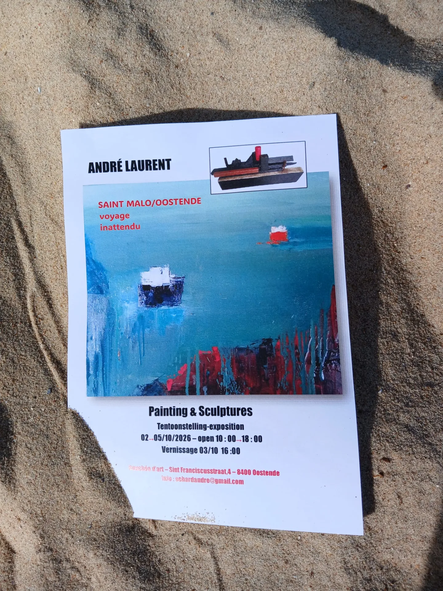
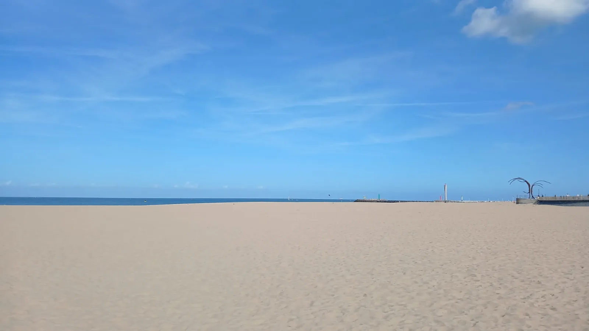

Kunstcentrum in Oostende
Bouchée d’Art
Over het kunstcentrum
Bouchée d’Art is een kunstcentrum in Oostende, gevestigd in de Sint Fransiscusstraat 4. Ontdek tentoonstellingen met schilderijen en sculpturen en de deelnemende kunstenaars.

Nu te zien
voyage inattendu
02 — 05 november 2026
SAINT MALO / OOSTENDE
Schilderijen en sculpturen
Vernissage 03/10 16:00
Open 10:00 — 18:00

Kunstenaar
André LAURENT
Verantwoordelijke
C.D.
Bezoek ons
Adres
Sint Fransiscusstraat 4
8400 Oostende
Openingsuren
open 10:00 — 18:00